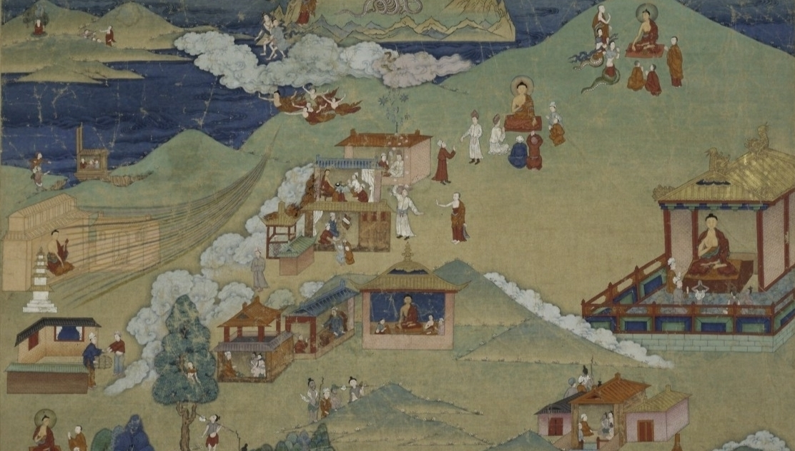

Giardini cinesi
L'amministrazione della Cina imperiale è rimasta invariata nonostante i cambiamenti di dinastie attraverso i secoli. Ovvero l'ordine e la coesione dell'Impero erano organizzati da un importante ceto di funzionari e tutto - assolutamente tutto - veniva sottomesso a una severa regolamentazione: il vocabolario, la grammatica, la calligrafia, le formule di cortesia, le ceremonie, la ierarchia dei cinesi, quanto uno si doveva inchinare per salutare un superiore o un subordinato, il numero dei bottoni dei loro vestiti, il numero di rami del ventaglio, il ritmo dei loro passi, il diametro delle loro tazze da tè, l'arredamento delle loro case, e questo elenco non è esaustivo. Tutto stava tessendo una rete di vincoli intorno all'individuo, il cui peso stava diventando schiacciante.
L'Imperatore stesso era sottomesso a tali regole. Il Figlio del Cielo non veniva vincolato dagli agenti di controllo come i suoi concittadini ma ogni sua azione era soggetta ai requisiti di un protocollo e nessun dettaglio del quale poteva essere cambiato.
Come scappare di un tale confino? Costruendo dei giardini capaci di portare agli individui una liberazione a loro impedita a causa del loro poco sviluppato senso della metafisica e a causa della rigida codificazione del quotidiano. Questi giardini dovevano essere giardini di evasione, di sogno, di libertà, di fantasia; frammenti di cosmo diversi della loro campagna; luoghi privilegiati senza semina né raccolta, senza estate né inverno, sequenze di punti di vista dove nulla sarebbe prevedibile, dove il passeggiatore andrebbe di scoperta in scoperta; spazi armoniosi dove tutto sarebbe rimodellato per eccitare l'immaginazione dell'uomo e portarlo oltre i suoi orizzonti abituali.
Non appena videro questa possibilità, i cinesi iniziarono a costruire giardini con uno zelo senza pari. Non tutti i giardini erano della stessa dimensione, tutt'altro: la loro superficie variava secondo i mezzi dei loro proprietari. Ma tutti aspiravano ad avere il proprio, perché il godimento di un giardino era un bisogno vitale.
Questi parchi pretendevano essere un riassunto dell'Impero, o meglio: un microcosmo dell'universo. Contenivano sante montagne, "grotte-cielo" cioè caverne di cui la volta era divisa in modo di permettere la contemplazione delle stelle (esse si vedevano tanto meglio quanto venivano osservate dal fondo di una stanza oscura) oltre a dei templi alla memoria degli anziani dedicati. Ogni pietra veniva lavorata dalla mano di un artista per darle l'aspetto "di una cosa mai vista". Furono eretti padiglioni di porcellana, dai cui tetti furono appese campane d'argento che, scosse dalla brezza, "diffondevano nell'aria una musica così dolce che non si sapeva se si trattava di un suono o di un profumo" come racconta un cronista.
Nonostante lo scopo di questi favolosi giardini era di portare una senzazione benefica di evasione e libertà a quelli che li ammiravano la loro costruzione obediva a delle ben precise regole. I sentieri regolari, le aiuole ordinate e, in generale, tutto ciò che poteva essere simmetrico, erano severamente vietati. È per questo che la maggior parte dei loro giardini sono stati progettati come una sequenza di paesaggi contrastanti, il cui insieme non doveva mai essere visto in una volta sola, ma i cui diversi aspetti dovevano essere rivelati uno dopo l'altro per fornire al visitatore una serie ininterrotta di sorprese.
La complementarità degli opposti
Tra le numerose regole che governano la disposizione dei giardini cinesi una era quella di dare della densità al vuoto e di organizzare degli spazi vuoti all'interno di spazi pieni perché secondo Pierre Ryckmans* "entrambi i concetti di pieno e vuoto possedevano un'estrema densità di implicazioni filosofiche in Cina". Shen Fu, uno scrittore cinese del fine 700 inizio 800, dice nei Sei racconti di vita fluttuante: per offrire piacevoli prospettive "bisogna far vedere il grande nel piccolo e il piccolo nel grande e far vedere il pieno nel vuoto nonché il vuoto nel pieno. Così è il principio che l'unica armonia degna di questo nome è quella che esalta i contrasti per meglio far emergere la complementarità degli opposti."
Con i loro sentieri e fiumi capricciosi, con i loro ponti gettati con noncuranza sugli abissi, i loro chioschi sospesi tra terra e cielo, i loro precipizi vertiginosi dove scrosciano le cascate, le loro cime frastagliate che bucano le nuvole, questi giardini esercitano una sorta di incantesimo sulla mente. Allo stesso tempo meticolosi e selvaggi, sono grandiosi nel loro effetto generale e delicati nei loro dettagli.
La dimensione dei giardini non aveva nessuna importanza e un grande giardino non diceva nulla del prestigio del proprietario. Perciò oltre ai giardini di cento ettari ce ne erano di minuscoli. Così minuscoli che potevano stare in una scodella, una ciotola, nel palmo della mano.
Come spiegare questo atteggiamento, così sconcertante per un occidentale, ma al quale si deve la creazione di una moltitudine di giardini lilipoti, di giardini-miniatura? Da un tratto fondamentale dell'immaginazione cinese che è arrivato a permeare tutte le manifestazioni del loro pensiero: la capacità di fissare la loro attenzione sulle cose più minute come le grandi - l'elitra di una libellula, la rugosità di un sasso, la lanugine di un seme, il petalo di un fiore - e di trovare in esse un potere di ammaliamento intenso.
Per i cinesi, non esiste una scala assoluta di grandezza. La dimensione di un oggetto non è, di per sé, importante. Conta solo il "livello di osservazione" al quale lo si contempla. Quando sentono i fisici contemporanei dichiarare che c'è una profonda somiglianza tra la struttura di un atomo e quella del sistema solare, i cinesi sorridono sapendo già. Una tale dichiarazione non è una sorpresa per loro. Abituati da secoli a vedere "il pieno nel vuoto" e "il piccolo nel grande", non fanno differenza tra il macrocosmo e il microcosmo. Per loro, l'infinitamente grande e l'infinitamente piccolo sono equivalenti e si compenetrano a vicenda. Basta un impercettibile clic per passare da uno all'altro.
E siccome esiste un imperialismo degli stati esistette in Cina un imperialismo dei giardini. Scavalcando i confini del Celeste Impero essi irradiarono in altri paesi, segnatamente in Corea, a Formosa e in Giappone "per insegnare ad altri uomini ancora immersi nell'ignoranza come costruire sentieri portando alla Felicità".
Jacques-Benoist Méchin
Estratti tradotti dal francese all'italiano da Sébastien Lantrade
*P. Ryckmans, Six récits au fil inconstants des jours, traduit du chinois, Éditions F. Larcier, Bruxelles, 1966.